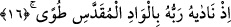
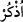

gelmeden önce- ibret al, denmiş olmaktadır. Herhangi bir kıssanın anlatılmasında kısa
anlatımdan akla ilk gelen ihtimal budur. Âyetin başındaki soru istifham-ı takriridir. Yani
bu, Peygamber Efendimiz’i bundan önce bildiği bir olguyu ikrara sevkedici bir soru
edatıdır. Buna göre âyette Peygamber Efendimiz’e şöyle denmiş olmaktadır: “/
Mûsâ’nın sözü sana gelmedi mi?”
Kavminin seni yalanlamasından dolayı kalbine teselli vermek için, ayrıca mü’minlere
vaad edileni, kâfirlere cezâlarını duyurman için sana Musâ’nın haberi gelmedi mi? Yani
sana Mûsâ’nın sözü yakında geldi ve ulaştı. Buna göre Peygamber Efendimiz, sanki Hz.
Mûsâ’nın sözünü bilmiyordu ve bu söz henüz ona gelmemişti. Yoksa Peygamber
Efendimiz (s.a.) kâfirlerin öldükten sonra dirilme olgusunu inkâr edişlerine ve bunu
alaya almalarına üzülmezdi. Tam tersine bu haberle tesellî bulurdu.
Âyetteki “hel” soru edatı cümledeki hükmü geçmiş zamandan şimdiki zamana doğru
yaklaştıran “kad” mânâsınadır. Bundan önce gizli bir istifham hemzesi vardır. O
hemzeyle istifham-ı takrîrî anlamı sağlanmaktadır. Biz yukarda cümleyi takdir ederken
araya “leyse” fiili koyduk. Çünkü bu fiil, âyetin ifâdesinde mukadder olduğundan değil,
böyle olduğu açık bir biçimde belli olduğundan dolayıdır.
16. Kutsal vadi Tuva’da Rabbi ona şöyle seslenmişti
Buradaki “iz” edatı yukarda geçen “hadîs/söz” kelimesinin zarfıdır; yâni onun
zamanını bildirmektedir. Kamus’ta “nida” kelimesi “ses” olarak karşılanmaktadır.
Bunun “çağırmak ve okumak” anlamları da vardır. Buna göre âyette şöyle denmiş
olmaktadır: “Sana Mûsâ’nın rabbı kendisine çağrıda bulunduğu zaman ki sözü geldi
mi?” Cümleyi böyle takdir etmemiz sebebsiz değildir. Çünkü maksad, bunun haberidir.
Onun vuku bulması için de mutlaka bir zaman olması şarttır. Şu halde âyette “iz” edatı -
yukarda işâret ettiğimiz- “hadîs” kelimesinin zarfıdır. Çünkü “gelme” ile “nida yâni
seslenme” fiillerinin zamanları farklıdır. Zira “gelme”, seslenme vaktinde henüz
gerçekleşmiş değildir. Hz. Mûsâ’nın sözünün Peygamber Efendimiz’e gelmesi,
Rabbinin ona seslenmesinden daha sonra olmuştur.
Yukarda geçen “iz” edatını gizli bir “
/hatırla” fiilinin mef’ûlü de yapabiliriz.
Bundan dolayı kırâat âlimi olan İmam Secâvendi, âyette “Mûsâ” kelimesi üzerine vakf-
ı lâzım işâreti koymuştur. Buna göre burada durulmayıp geçilecek olursa bu takdirde
“iz” edatı, “gelme” fiilinin zarfı olmuş olur. Bu takdirde Hz. Mûsâ’nın sözünün
Peygamber Efendimiz’e gelme zamanı, Allah’ın Hz. Mûsâ’ya hitap ettiği zamanın ta
kendisi olmuş olur ki bu imkansızdır. Öyle görünüyor ki İmam Secâvendi, cümlede
“hadîs” kelimesinden önce amel edebilecek daha güçlü bir fiil dururken “hadîs”